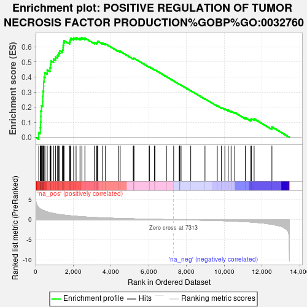
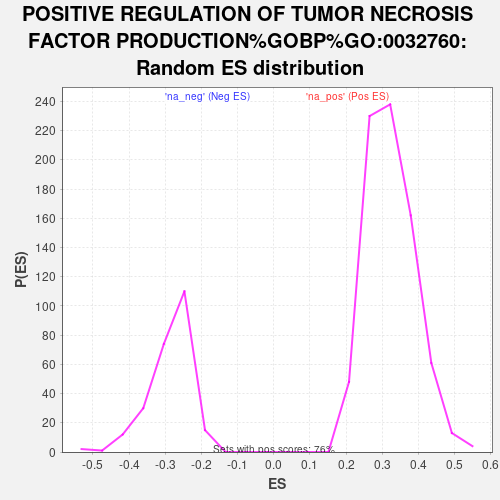

| | | Dataset | ranked_list_female |
| Phenotype | NoPhenotypeAvailable |
| Upregulated in class | na_pos |
| GeneSet | POSITIVE REGULATION OF TUMOR NECROSIS FACTOR PRODUCTION%GOBP%GO:0032760 |
| Enrichment Score (ES) | 0.6616117 |
| Normalized Enrichment Score (NES) | 2.0481195 |
| Nominal p-value | 0.0 |
| FDR q-value | 5.738511E-4 |
| FWER p-Value | 0.008 |
Table: GSEA Results Summary

Fig 1: Enrichment plot: POSITIVE REGULATION OF TUMOR NECROSIS FACTOR PRODUCTION%GOBP%GO:0032760
Profile of the Running ES Score & Positions of GeneSet Members on the Rank Ordered List
| SYMBOL | RANK IN GENE LIST | RANK METRIC SCORE | RUNNING ES | CORE ENRICHMENT | | 1 | TLR4 | 168 | 2.992 | 0.0311 | Yes |
| 2 | LILRA5 | 249 | 2.673 | 0.0642 | Yes |
| 3 | TLR2 | 263 | 2.626 | 0.1015 | Yes |
| 4 | PSEN1 | 278 | 2.570 | 0.1380 | Yes |
| 5 | CLU | 282 | 2.563 | 0.1752 | Yes |
| 6 | TLR1 | 311 | 2.498 | 0.2096 | Yes |
| 7 | TYROBP | 376 | 2.355 | 0.2392 | Yes |
| 8 | LILRA2 | 379 | 2.351 | 0.2734 | Yes |
| 9 | NOD2 | 395 | 2.313 | 0.3060 | Yes |
| 10 | PF4 | 425 | 2.262 | 0.3369 | Yes |
| 11 | APP | 428 | 2.261 | 0.3697 | Yes |
| 12 | TNFRSF8 | 450 | 2.221 | 0.4006 | Yes |
| 13 | CLEC7A | 495 | 2.129 | 0.4284 | Yes |
| 14 | OAS1 | 616 | 1.925 | 0.4475 | Yes |
| 15 | FCGR2A | 762 | 1.736 | 0.4620 | Yes |
| 16 | PTPRJ | 797 | 1.685 | 0.4841 | Yes |
| 17 | LGALS9 | 814 | 1.671 | 0.5073 | Yes |
| 18 | LPL | 951 | 1.538 | 0.5196 | Yes |
| 19 | PYCARD | 1054 | 1.443 | 0.5330 | Yes |
| 20 | LY96 | 1164 | 1.352 | 0.5446 | Yes |
| 21 | CCL3 | 1225 | 1.301 | 0.5592 | Yes |
| 22 | JAK2 | 1279 | 1.265 | 0.5737 | Yes |
| 23 | IFIH1 | 1425 | 1.176 | 0.5800 | Yes |
| 24 | CD84 | 1457 | 1.160 | 0.5946 | Yes |
| 25 | CCR2 | 1462 | 1.157 | 0.6112 | Yes |
| 26 | IFNGR1 | 1485 | 1.146 | 0.6263 | Yes |
| 27 | OAS3 | 1508 | 1.131 | 0.6412 | Yes |
| 28 | CYBA | 1805 | 0.985 | 0.6335 | Yes |
| 29 | SYK | 1834 | 0.968 | 0.6455 | Yes |
| 30 | CD14 | 1868 | 0.953 | 0.6570 | Yes |
| 31 | PTPRC | 2018 | 0.892 | 0.6589 | Yes |
| 32 | FCGR3A | 2146 | 0.838 | 0.6616 | Yes |
| 33 | EPHB2 | 2354 | 0.757 | 0.6572 | No |
| 34 | OAS2 | 2454 | 0.724 | 0.6604 | No |
| 35 | TMEM106A | 2614 | 0.674 | 0.6583 | No |
| 36 | MAVS | 3115 | 0.541 | 0.6289 | No |
| 37 | ARHGEF2 | 3237 | 0.514 | 0.6274 | No |
| 38 | SPN | 3278 | 0.503 | 0.6317 | No |
| 39 | FADD | 3302 | 0.498 | 0.6373 | No |
| 40 | SPHK2 | 3552 | 0.445 | 0.6252 | No |
| 41 | FZD5 | 3704 | 0.416 | 0.6200 | No |
| 42 | TLR3 | 4384 | 0.308 | 0.5738 | No |
| 43 | MMP8 | 4484 | 0.292 | 0.5706 | No |
| 44 | TLR9 | 5182 | 0.199 | 0.5215 | No |
| 45 | FCGR2B | 5183 | 0.199 | 0.5244 | No |
| 46 | IFNG | 5219 | 0.195 | 0.5246 | No |
| 47 | STAT3 | 6023 | 0.107 | 0.4662 | No |
| 48 | CD2 | 6033 | 0.106 | 0.4671 | No |
| 49 | SETD4 | 6304 | 0.080 | 0.4481 | No |
| 50 | TIRAP | 6330 | 0.077 | 0.4473 | No |
| 51 | HLA-E | 6937 | 0.028 | 0.4025 | No |
| 52 | DDT | 7321 | -0.000 | 0.3739 | No |
| 53 | RIPK1 | 7619 | -0.022 | 0.3520 | No |
| 54 | HAVCR2 | 7627 | -0.023 | 0.3518 | No |
| 55 | HSPB1 | 7646 | -0.024 | 0.3508 | No |
| 56 | ARFGEF2 | 7713 | -0.030 | 0.3463 | No |
| 57 | AZU1 | 8226 | -0.074 | 0.3092 | No |
| 58 | AGER | 8981 | -0.149 | 0.2550 | No |
| 59 | FRMD8 | 9633 | -0.230 | 0.2098 | No |
| 60 | RASGRP1 | 9853 | -0.260 | 0.1972 | No |
| 61 | DHX9 | 10035 | -0.288 | 0.1879 | No |
| 62 | HMGB1 | 10212 | -0.320 | 0.1794 | No |
| 63 | PLCG2 | 10365 | -0.345 | 0.1731 | No |
| 64 | FCGR2C | 10561 | -0.386 | 0.1642 | No |
| 65 | THBS1 | 11118 | -0.514 | 0.1302 | No |
| 66 | TGFB1 | 11413 | -0.600 | 0.1170 | No |
| 67 | MIF | 11447 | -0.610 | 0.1234 | No |
| 68 | PTPN11 | 11586 | -0.652 | 0.1226 | No |
| 69 | IL23A | 12530 | -1.169 | 0.0692 | No |
Table: GSEA details [plain text format]

Fig 2: POSITIVE REGULATION OF TUMOR NECROSIS FACTOR PRODUCTION%GOBP%GO:0032760: Random ES distribution
Gene set null distribution of ES for POSITIVE REGULATION OF TUMOR NECROSIS FACTOR PRODUCTION%GOBP%GO:0032760